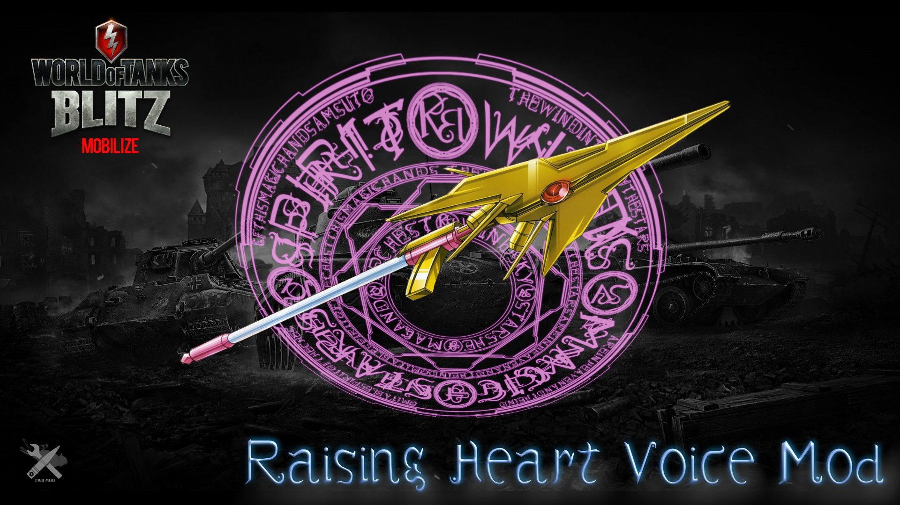

Raising Heart Crew Voice
Creator
Name: Freewheeler
Twitter:
@Freewheeler_
E-mali:
blitz@fwbmod.com
Special Tanks: Blue_Magnolia
Mod Information
ID: sfx.voice.rh
Description: Raising Heart Crew Voice.
(C) NANOHA PROJECT

Sample